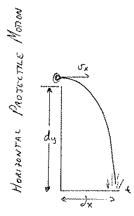
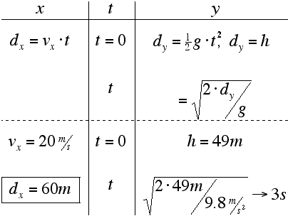
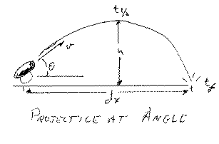
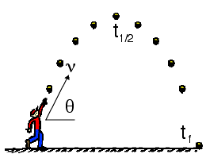

>
Projectile Motion is simply the application of one dimensional kinematics to motion in two dimensions. The movement in each direction is treated independantly of the other. The only thing that links the two is time. For this reason a table approach is best when trying to solve these kinds of problems. Here are two examples of how to go about this.
you will need your password to the physics classroom handed out in class
Horizontal Projectiles

You are given a starting velocity which will be the horizontal component throughout the fall
You determine the time it takes to hit the ground (its initial vertical velocity is 0!) by using the free fall formula.
Simply multiplying the horizontal velocity by the time to fall gives the distance it hits away from the cliff.

Angled Projectile

Take the same approach as above only consider the top to be the same point as the horizontal projection illustrated above.
The time to fall is exactly 1/2 the total time of flight. In the case of the angled projection we know what the vertical velocity will be when it hits the ground. It is exactly the y component of the velocity it had when it took off only in the opposite direction. Thus the time to fall from the peak is easily calculated.
Once we know the time from the peak to the ground we can figure the total time of flight. With this we can calculate the range.